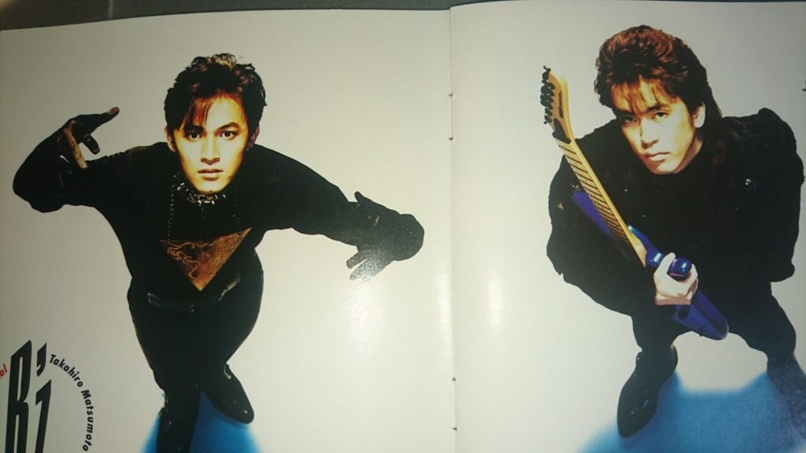

勝手にレビュー4 : B'zの3rdアルバム『BREAK THROUGH』
派手なメロディが増え、前作よりさらに稲葉と松本の楽曲制作がこなれてきた印象を受けます。
皮肉を効かせた見方をすれば、より売れ線を意識したアルバムになっております。
B’z『BREAK THROUGH』1990月2月21日
1. LADY-GO-ROUND 3 / 5 点
一部に古文調の歌詞を取り入れているので、都会の夜の華やかな空気と、平安時代の雅な雰囲気が入り混じった奇妙な曲でおじゃる。
「燃える愛のリズムに 火照る身体 いつも夢中だった」という歌詞がそこはかとないエロ。
2008年のACTIONツアーで演奏されたやつがめちゃんこかっこいいです。
2. B・U・M 5 / 5 点
英語ラップ。稲葉とゆかいな仲間たちを紹介する歌。
短くコンパクトに仕上がっており、そのおかげでダサカッコよさが濃縮されています。
2007年10月にニコニコでゲリラ開催されたB’z X アイドルマスター動画群のOPムービーで使用されました。
↑これですね。古参ぶってますが、初見はわりと最近です。
3. BREAK THROUGH 4 / 5 点
アーティストとしてそこそこ成功してきたが、それに満足せず新たな段階への挑戦を意気込む当時の自分達をそのまま表現したかのような曲。
実際、次作のアルバムでは音楽ジャンルをガラリと変えてきます。というか、アルバム毎にジャンルを変化させていくスタイルを現在に至るまで貫いています。このあたりの有言実行っぷりが、偉大な人物と僕のようなダメ人間との差異なのでしょう。
新しい理想のために 上々の現状 捨てたい瞬間がくるだろう いつか
高校1年次の部活の同期にB’zを布教したら、これにドンバマりしてました。M君お元気ですか。連絡先を誰にも知らせていないもんだから死亡疑惑とかでたりして、部活の皆も心配していますよ。
4. BOYS IN TOWN 4 / 5 点
前曲と似たようなコンセプトの曲。とにかくビッグになって故郷に帰ってきてやるぜ！って感じ。「変わりたいよ 少しずつでもいい あの人はすごいと 世界のウワサになりたい」という歌詞から伝わる、青臭いエネルギッシュなハングリー精神がビンビンきます。まあ僕の場合、ビンビンくるだけで終わってしまうのですがね。
5. GUITARは泣いている 3 / 5 点
ビートルズの「ワイル・マイ・ギター・ジェントリー・ウィープス」のオマージュっすね（ジョジョ5部にも出てきました。「根掘り葉堀り」のプッツン眼鏡のスタンドのことです）。
自分とは格の違う想いびとへの伝わらない感情を迸らせている、悲しき曲。
6. LOVE & CHAIN 3 / 5 点
シンセサイザー（って言うんですかね？ピアノみたいなピコピコ音を出す楽器）が美しいけど、歌詞はntrれた恋人をntr返すとかいう内容。
「今ごろ気づいたよ やさしく縛るのも Love & Free」ってとんでもないドS。恋人がマゾじゃないのにギッチリ縛ってたら、そらntrますわ（ちゃんと調教してなかったの？）。サドっ気を発揮する相手は、やっぱ慎重に区別したいところです。
7. となりでねむらせて 2 / 5 点
メロディは半端なく美しいのに、歌詞がザ・バブル期の恋愛って感じのありふれた、つまらない曲。非常にもったいない。
8. HEY BROTHER 1 / 5 点
日本語ラップ。やたらとチャラチャラしたとんでもないDQN曲。
ダサさを極めに極めたという意味では天下一品。
9. 今では…今なら…今も… 3 / 5 点
チャイナなメロディが印象的な失恋歌。
元恋人と偶然すれ違うもそれに気づいているのは自分だけという、まあ出来過ぎなマンガじみた光景ですが、それでも泣けてきます。
後に「パール盤」で再アレンジ。
10. SAVE ME!? 5 / 5 点
女友達のことが好きだと最近気づいたから、フラフラしてないで僕のところにおいでよ！というなんともダサい曲です。
ジミ・ヘンドリクスをまんまパクった曲でもあり（ラストサビで「Purple Haze」って言っちゃってるし）、そこらへんの突き抜けた情けなさやアホっぽいノリも含めて大好きです。
11. STARDUST TRAIN 5 / 5 点
銀河鉄道の夜っぽいロマンチックな雰囲気を醸し出す曲名とメロディなのに、略奪愛がテーマ。
べッタベタな王道バラードなのについつい引き込まれるのは、さすが松本といったところでしょうか。
稲葉も稲葉で情景描写が天才的。「夕暮れの列車は燃えあがる海辺を走る」、「無口な列車がネオンの街を走る」、「星屑の列車がトンネルを抜けていく」。これだけで男女二人の機微や距離感を表現できてしまってます。
総評 : 4 / 5 点
B’z初期のテクノ路線を極めた作品。稲葉と松本の若々しさが爆発した曲も散りばめられています。
おまけ

左の男性は福山雅治ですか？